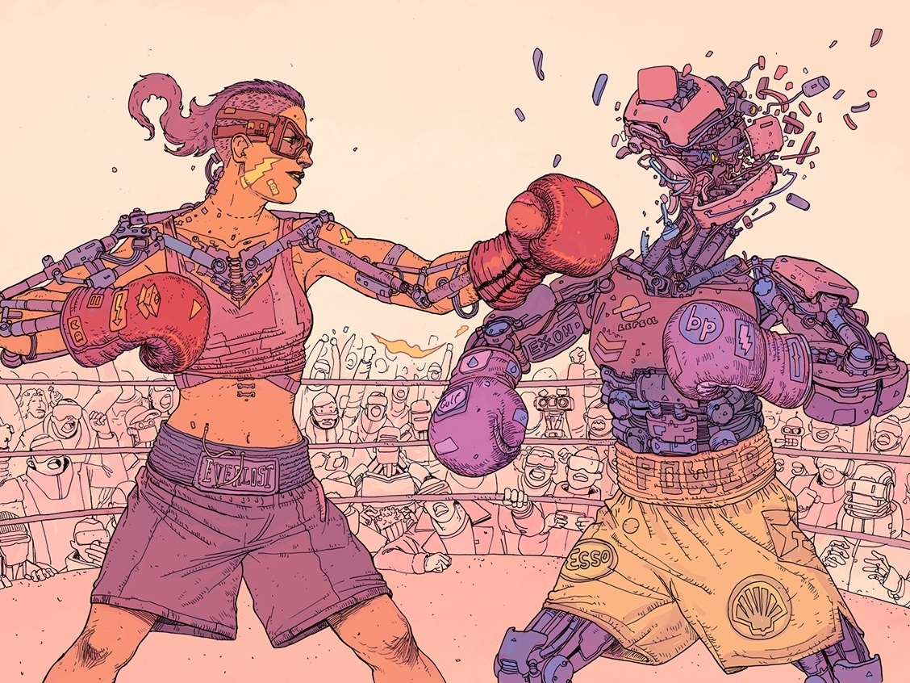

El xenofeminismo se presenta como una corriente contemporánea del feminismo que propone una relación estratégica con la tecnología, no desde el rechazo sino desde su apropiación. Según el colectivo Laboria Cuboniks (2015), esta perspectiva plantea que la tecnología puede ser utilizada como una herramienta para desmantelar las estructuras de desigualdad asociadas al género, el cuerpo y la sexualidad.
A diferencia de posturas que ven la tecnología únicamente como un mecanismo de control, el xenofeminismo apuesta por su potencial emancipador. En este sentido, los juguetes sexuales pueden ser comprendidos como dispositivos que permiten intervenir activamente en la construcción del cuerpo y del placer, desnaturalizando aquello que históricamente ha sido presentado como “lo dado” o “lo biológico”.

Desde esta perspectiva, no se trata de volver a una idea “natural” del cuerpo, sino de cuestionar qué entendemos por naturaleza. El xenofeminismo sostiene que lo natural también está atravesado por construcciones sociales y políticas, por lo que puede ser transformado. Así, tecnologías como los juguetes sexuales o incluso el uso de hormonas (como en el caso del Testogel) abren la posibilidad de modificar las formas en que se experimenta el género y la sexualidad.
En relación con los juguetes sexuales, el enfoque xenofeminista permite pensar estos dispositivos como herramientas que:
De esta manera, los juguetes sexuales dejan de ser vistos únicamente como objetos de consumo o sustitutos, para convertirse en tecnologías que posibilitan la exploración de nuevas formas de existencia.
Además, el xenofeminismo introduce una idea clave: si la tecnología ha sido utilizada para oprimir, también puede ser hackeada para liberar. En este sentido, el uso de juguetes sexuales puede entenderse como una práctica micropolítica que desafía las normas impuestas sobre quién puede sentir placer, cómo y bajo qué condiciones.
Sin embargo, al igual que en los otros enfoques analizados, esta potencialidad no es absoluta. El acceso a estas tecnologías sigue estando mediado por factores económicos, culturales y sociales. Por ello, el reto no es solo usar la tecnología, sino democratizarla y resignificarla.
En conclusión, el xenofeminismo permite ampliar el análisis de los juguetes sexuales al situarlos dentro de un proyecto político más amplio: el de reconfigurar las relaciones entre cuerpo, tecnología y poder. Desde esta mirada, el placer deja de ser únicamente una experiencia individual para convertirse también en un espacio de resistencia y transformación.